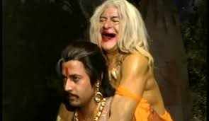

It was a dark night and was raining from time to time.Gusts of wind shook the trees. There were strange noises and in between the thunderclaps the moaning of jackals could be heard.Flashes of lightning revealed fearsome faces and there were strange and mysterious laughter of the spirits. But inspite of such a weird atmosphere king Vikramaditya did not swerve a bit. He climbed the ancient tree to bring the corpse down and soon he began crossing the desolate cremation ground, with the corpse lying on his shoulder. The Betaal that possessed the corpse spoke: "O King , I pity you as you are making untiring efforts without relaxing as if you wish to achieve something.Instead of enjoying a comfortable sleep on a cozy bed, you're still coming after me. You seem to be quite adamant. Such arrogance may not help you keep your promise if you had given one to anybody. You'll realize the futility of the whole thing if only you listen to my story." The Betaal then narrated this story.The ruler of Kishanagar, Rajendra, was extremely strong and courageous. He was a good ruler and cared about his people very much as he would not do anything unjust. His subjects were happy and contented. They had no problems. His queen, Prema, gave birth to a beautiful daughter, Sona. Being an only child, Sona enjoyed a lot of freedom and was brought up like a boy. She grew up clever not only in studies but in the use of the bow and arrow and sword. She learnt the art of self-defence. When she reached marriageable age, her parents began searching for a suitable husband for her. But Sona disagreed to their proposal as she had some definite ideas and views. She said to her parents that ,"Dear Father, I want that my husband should be one who is highly skilled in fighting and who is able to overpower, me in fight. Suppose if our kingdom face an enemy in the future, he should be able to fight & defeat them in war. If you agree to this condition then, you may make an announcement". The King & Queen were very proud to hear about their daughter's thoughts.The announcement was made in Kishanagar as well as in the neighbouring kingdoms. Thinking that Sona is only a girl,and it should not be a difficult to win a fight with her, many suitors came forward to accept her challenge as they also knew that Sona being the only heir they would have complete sway over the kingdom once they married her. But when they (the suitors) met Sona face to face these princes realized it was not that easy to defeat her. Everyone of them was routed by Sona, and they had to go back disappointed. She was taking on the suitors one after another, among them was Udayavarma, the prince of Chandanghar. He watched the fight every day , by joining the crowd. He carefully watched how Princess Sona fought and the different strategies she adopted to meet the method of fighting followed by each prince. One day, he could not control himself when he saw a particular way she used the sword. He got up and shouted "Bravo!" in appreciation and encouragement. Sona turned to look at him, wondering who he might be who could understand the intricacies of each and every stance and step during the fight. But among such a large crowd she could only get a glimpse of him. By now Udayavarma had learnt all her strategies, and the next day he was ready to fight with her. The two fought cleverly and fiercely. Neither of them was prepared to surrender to the other. During her fight Sona tried all her tricks, but Udayavarma was able to meet every one of them. She soon discovered that he was a good swordsman and that she would not be able to subdue him so easily. Soon Sona was defeated by Udayavarma.She stopped the fight and joined her parents. Cheers rose from the audience who was watching the proceedings very eagerly. When Udayavarma came forward to present himself to the King and queen, Sona recognized him as the one who had cheered her in encouragement the other day.She asked Udayavarma and he confessed to it. Now Sona knew how he had succeeded in overpowering her. She came forward and said to him that "My condition was that I would marry anyone who would defeat me in the contest. Though you've defeated me, I can't marry you. You can yourself find out the reason." Udayavarma thought for a while and said . "Yes what you say is right, O Princess. I should not marry you." He bowed to her and left the palace. The king and queen were surprised over their daughter's decision as according to her contest Sona insisted that she would marry only that man who would defeat her in the fight and Udayavarma had achieved it , but now she was not ready to marry him and even Udayavarma, too, had meekly accepted her decision, saying he could not possibly claim her hand. How strange! They were unable to guess what really was the cause? The Betaal concluded the story and asked King Vikramaditya, 1) "O king ! I've some doubts.I think Sona was proud of herself that she was an expert in warfare and that's why she announced that she would marry only whoever defeated her, didn't she? 2) As she scored a victory over one prince after another, she was becoming more and more arrogant. 3) Then came Udayavarma who succeeded in overpowering her. Again it was her from keeping her word. 4) Why did she say he did not de serve her hand in marriage in spite of his victory over her? It was all because of her arrogance, wasn't it? If you know the answers to my questions that speak out if you don't then I warn you that "your head will be blown to pieces!"
| Previous | Index | Next |